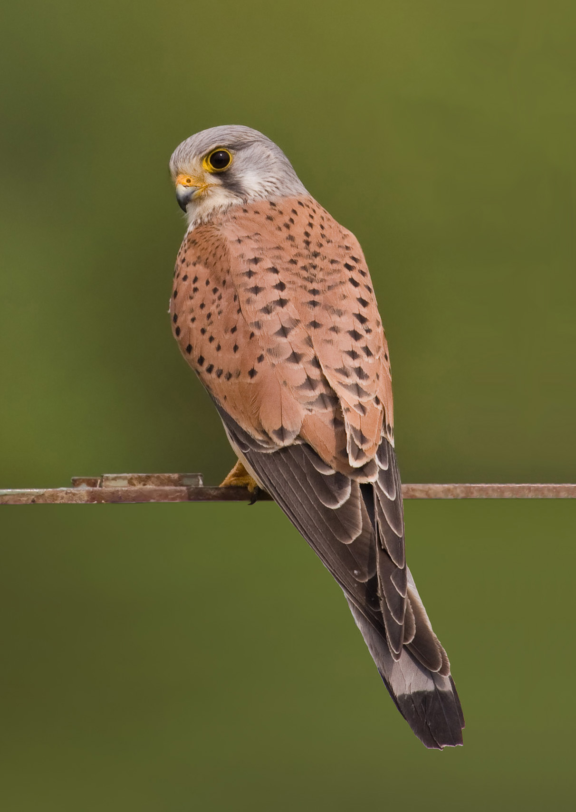

第 11 章
红隼的悬崖代偿
这份报告装订很薄，封面纸是常见的淡蓝色，左上角印着协会名称，中间一行“城区猛禽繁殖监测年度报告”，年份是二零二三。没有照片，也没有序言。翻开第一页，是一张横排表格，栏宽窄得近乎苛刻

红隼的悬崖代偿：历史出版插图
图源：维基共享资源 · Andreas Trepte · CC BY-SA 2.5
：巢址编号、位置、发现日期、繁殖状态、后续记录。
其中一行的“位置”栏比其他条目更长，一直延伸到页边：中央商务区天和国际大厦，24层东北角空调外机支架下方。后续记录被压缩成几行小字：五月二十日观测到三只雏鸟孵出；六月五日一只雏鸟午后坠下支架边缘，确认死亡，坠距约八十米；六月十二日物业公司例行外墙与空调设备维护，亲鸟受惊离巢数小时，归巢后喂食频率异常下降；六月十八日剩余两只雏鸟相继死亡，尸检提示严重脱水与营养不良；六月二十五日，巢体被作为建筑附着杂物清走。
整段记录没有形容词。十七处已知红隼巢址中，十一处成功孵化出雏鸟，最终至少有一只雏鸟存活至离巢的只有五处。表格把数字并排摆在那里，让结论自己浮出来。
中央商务区的这处巢址不是最差的一例，因为它至少有过三次破壳。但它把一个完整过程暴露得最清楚：从成功产卵到一无所有，中间只隔着一栋写字楼的日常节奏。
这份报告并非偏远荒野的野外笔记。它出自城市观鸟协会的年度监测，记录的是高楼群中一个红隼家庭的完整繁殖失败过程。报告没有使用“悲剧”一词，也没有附加评论。它收录的是后果，不是解释。
红隼在城市里极少以失败者的形象出现。它通常被看见时，正悬停在某片草地上方十几米处，翅膀急促扇动，头却纹丝不动。那是一种与游隼的俯冲完全不同的捕猎哲学。
游隼把速度推到极致，在俯冲中把身体变成一枚活体弹头；红隼不靠速度，而靠静止。它悬停时，尾羽微张，翅膀前缘迎风切出稳定的升力，整个身体像被一根看不见的细线吊住。
城市街头上方常有热气流与楼间风，红隼对它们的利用几乎到了精微的程度。尾羽每一次微调，翅膀后掠角度的每一分改变，都在抵消气流的扰动。有人说红隼的悬停是鸟类飞行术中最接近沉默的精准动作。
这种精确不是表演，而是识别猎物的扫描程序。红隼的眼睛在悬停高度上扫描的是草地、裸土、灌木间隙里的小型啮齿动物，以及地面活动的小鸟。城市供应了一整套替代猎物种群：小家鼠、褐家鼠占据了管道、垃圾站、地下车库和绿化带；麻雀在广场与步行街的地面觅食；偶尔还有仓皇穿过草坪的壁虎与金龟子。中央商务区的绿地面积不大，但写字楼之间的草坪、行道树坑和立体绿化形成了断续的捕猎斑块。
红隼并不需要大面积连续草地。它需要的是精准识别出猎物藏匿的位置，然后垂直落下，在最后一刻伸出利爪。下降路径在很多情况下是直线，因为写字楼之间的开阔空间几乎没有大型植被的阻挡。城市为红隼省去了一部分自然地形中的接近成本。
在形态上，红隼的性别二态性在猛禽中不算夸张，却清晰可辨。雄鸟头颈灰色，肩背砖红色带黑色点斑，尾羽灰蓝色，末端一条宽黑带；雌鸟则全身以棕褐色为底，布满深色纵纹和横斑。城市观察者常常凭颜色判断从楼顶掠过的红隼性别。
雌鸟略大，这在猛禽中常见，但在红隼身上差异不明显。更关键的差异在于繁殖角色。雌鸟在孵化期多数时间伏在巢内，雄鸟负责外出捕猎带回食物。这种分工使得繁殖期的红隼家庭对巢址附近的猎物密度极为敏感。雄鸟的每次往返，都是一条能量输送线。一旦这条线被干扰打断，雏鸟的饥饿会以小时计地累积。
天和国际大厦的那对红隼选择的是二十四层东北角阳台外侧的空调外机支架下方。
在自然环境中，红隼不营巢，不修筑任何类似碗状巢的结构。它依赖现成凹穴：岩壁裂缝、山崖石洞、旧鸦巢、甚至树洞。红隼的巢址选择本质上是对凹陷空间的识别。它需要一处能挡风避雨、底面平稳、后方封闭的浅穴。天然岩壁提供这类结构的概率并不高。悬崖上适合红隼的洞穴往往是侵蚀形成的凹槽，或者宽大岩缝中被碎石填出平台的狭小空间。红隼在自然界的繁殖密度因此受制于地质条件。城市建筑无意间成批量地复制了这类结构。
通风管道的外口、建筑伸缩缝、外挂空调支架与墙体之间的空隙、桥墩顶部的凹槽、信号塔平台的围栏夹角——它们在空间形态上与岩壁凹穴产生了某种物理等效。红隼没有学习“建筑学”。它只是把祖传的巢址识别模板套用在了人类高层建筑的表面。这个模板并不精细，它只要求几个关键参数：后方封闭、上方遮护、底面能容纳三到五枚卵。写字楼的立面充满了这样的位置。
这种模板也不新。在欧洲许多旧城，红隼占据教堂尖塔、城堡墙缝和谷仓桁架的历史早于现代城市扩张。在中国西北和华北的古城墙、砖塔和烽燧上，红隼繁殖的记录并不罕见。现代高层建筑只是把这一既有倾向放大到前所未有的密度。
传统建筑提供给红隼的凹穴数量有限，一座写字楼表面可能在同一年被不同个体反复试探。城市更新的速度越快，新缝隙越容易产生，但拆除和封堵也越快。红隼的代偿不是一个现代才出现的异常行为，它只是被现代建筑体量推到了新的尺度上。这正是红隼城市扩张的机制核心。
它不是适应了城市的全部，而是识别出了城市建筑与自然悬崖之间的结构同形。其他猛禽没有走到这一步。灰脸鵟鹰需要大面积林地，雀鹰依赖密林突袭，游隼虽然也进驻城市，却更依赖桥梁和高层建筑的顶端平台。红隼的认知跃迁在于，它没有把建筑物当作“人造物”来理解，而是从视觉和空间经验上把它们划入“可用的悬崖”。这个转换是无声的，却决定了一个物种能否在高密度城市核心区繁殖。
建筑给了它悬崖。也给了它坠落。但这种代偿的开局越是巧妙，后果清算时暴露的裂缝就越深。
建筑替代悬崖，带来的是选择压力的全面改写。天然岩壁的凹穴温度相对稳定。岩石的比热容大，白天吸热慢，夜间放热慢，洞穴深处常维持一个波动较小的微气候。混凝土和钢材完全不是这样。玻璃幕墙吸收和反射的太阳辐射，让空调外机支架下的巢址在夏季午后迅速升温。建筑外立面在夜晚又迅速失热。空调外机本身时而排热，时而停转，把巢址变成温度波动的放大器。
天和国际大厦的巢址位于东北角，早晨接受直射阳光，午后进入阴影，空调外机的运行周期又与办公楼的作息绑定。雏鸟在孵化后的第一周内几乎无法自行调节体温，亲鸟离巢觅食的间隙里，巢温可以上下滑动数度。这种波动在自然悬崖中极少出现。
温差还不是建筑巢址唯一的隐秘成本。写字楼外立面通常朝向盛行风，高层风速比地面高出许多。自然悬崖的凹穴往往有岩体阻挡强风，而空调外机支架下方只是半个开放的空间，风从支架两侧穿过，直接吹打雏鸟。夏天暴雨时，凹穴的排水路径也远不如天然岩石中的导流沟稳定。水可能积在支架与墙体之间的窄槽里，也可能从玻璃幕墙表面成片漫下。这些微气候事件没有被记进年度报告，但它们以雏鸟体温、湿羽和能量消耗的形式进入了存活率。
人类干扰是第二把刀。红隼选择写字楼外壁，等于把巢址嵌入了一套以维护清洁为优先目标的物业管理体系。六月十二日的维护作业不再是个体行为问题，它代表了城市所有建筑附着物都逃不过的制度循环。
亲鸟被吊篮、水枪和检修人员惊飞数小时，归巢后喂食频率下降。对于一个由三只雏鸟组成的家庭，一次数小时的喂食中断在食物充足时可能无碍，但在雏鸟已经因前一只坠落而承受压力时，它成了压断能量链的一节。报告里没有写亲鸟是否在远处盘旋，也没有写检修人员是否注意到了巢。报告只记下事实：喂食行为异常减少，四天后剩余两只雏鸟脱水而死。报告不写盘旋，因为盘旋不会被记录。
记录者也无法进入吊篮。事实被分割在两个系统里：观鸟者记录的有日期、有计数、有行为状态；物业记录里只有作业项目、完成时间和设备位置。两者之间没有重叠，除了同一个空调外机支架。
坠巢风险在建筑巢址中被放大到一个自然悬崖上罕见的程度。天然岩壁的凹穴前常有一小段缓坡或岩台，雏鸟在学飞前的蹒跚活动范围有限，掉落的概率较低。即便掉落，岩壁下方也可能是草丛或石缝，坠落距离通常不大。高层建筑改变了空间尺度。二十四层楼高的支架边缘没有缓坡，下方是硬质铺装，坠落距离八十米。
雏鸟在成长过程中一旦踏出巢穴边沿，几乎没有生还的可能。红隼雏鸟在羽毛渐丰时会频繁扇翅、跳跃、试探边缘，这种本能在岩壁环境中是安全的，在写字楼外立面上却直接对应着死亡。更深层的代价写在繁殖成功率里。年度报告显示，十七处城区巢址最终只有五处至少存活一只雏鸟到离巢。同期远郊自然岩壁监测点的成功率更高。如果把繁殖成功率视为一种策略的分数，红隼的城市化显然还没有交出一份漂亮的答卷。
但这不等于“生态陷阱”的完整证据。生态陷阱的判定通常需要两个条件：其一，动物错误地将低质量栖息地判断为高质量栖息地；其二，这种错误导致种群下降甚至灭绝。红隼的城市繁殖确实可能在某些年份失败率偏高，但它同时也在城市中持续建立新的巢址。一个失败的巢址可能被另一对红隼在下一年重新占据，建筑存量又提供了大量备选位置。高失败率与持续的巢址扩张并存，使得天平并不简单地倒向悲观一端。
我们需要停下来，把这里说得更清楚。如果只看一年数据，确实像是一场正在形成的生态陷阱。
城市用大量的建筑凹穴和鼠类资源引诱红隼进入繁殖，然后在最关键的一周用外墙维护、极端巢温和坠落风险摧毁大部分产出。可是，对红隼而言，巢址从来不是一次性资源。自然悬崖的洞穴可以反复使用数十年，但数量有限；城市建筑的缝隙数量巨大，尽管寿命短。红隼个体在同一栋楼的不同楼层、同一条街的不同楼宇之间频繁迁移试探。失败不会形成永久的负反馈，只要城市还在更新，新的缝隙就会不断出现。这使红隼的城市化更像一场高风险繁殖，而不是一次不可逆的种群陷阱。
反方解释仍然值得认真对待。有人说，红隼的城市繁荣只是破碎化生境中的被动残存，依赖城市鼠类和建筑缝隙维持一种虚假黎明。
这个判断的问题在于，红隼并不是被赶进城市的失败者。它在农业区和草原上的原生种群也长期利用人类构筑物。古建筑、教堂尖塔、谷仓和旧城墙在许多地区被红隼占据的历史远早于现代城市化。城市建筑恰恰给了这种既有行为模板一个大规模变现的机会。
真正的生态陷阱往往表现为动物无法完成繁殖周期，却在数量上仍有局部聚集。红隼的情况不同：它能够完成繁殖，只是成功率因建筑结构和人类活动而大幅波动。危险是真实的，但它更像一种高风险高波动的新策略，而不是单纯的灭绝前幻觉。
不过，说它“成功”，也不应当被理解为一种稳定的繁荣。一个繁殖率低于维持种群稳定水平的城市群体，可能在多年内仍持续存在，因为不断有亚成体和外围个体从城外补充进来。城市是汇，还是源？这个问题在红隼身上没有得到终局答案。
有的年份，城市巢址的成功率接近自然崖壁；有的年份，像这份报告记录的，十一处孵化只有五处有存活。波动本身就是城市红隼的种群特征。它还没有被自然选择推向一个更适应建筑的亚群体，也还没有被城市淘汰。它正处在两者之间。
公民科学实践在这个问题上提供了关键数据。城市观鸟者监测红隼繁殖并不需要昂贵器材。一个望远镜、一本记录本、持续数周在固定地点的观察，就足以产出可比对的繁殖记录。
全国多个城市的观鸟团体长期追踪当地红隼巢址，有些记录连续跨度超过十年。正是这些记录，让建筑巢址的高失败率从偶然观察变成了系统数据。观鸟者还常常充当非正式的保护者。他们发现巢址后，有些人会通知物业公司，试图协调维护时间避开繁殖期。有些物业公司接受了建议，调整了清洗排期；多数情况则没有下文。
天和国际大厦的案例并非因为无人发现。发现者早已报告，但物业维护是合同任务，消防与外墙安全规定在制度层级上高于一个鸟巢的存在。这里存在一个几乎无法绕过的制度序列。
观鸟协会的年度报告可以证明红隼曾经存在、繁殖、死亡；物业公司的维护记录可以证明设备曾被检修、附着物曾被清理。前者的语言是生物学，后者的语言是建筑安全和清洁标准。当两种语言在同一个支架下方相遇，它们不会争论，只会按操作顺序先后发生。
巢体清理不是恶意，它甚至不需要专门的清除通知。对物业而言，那只是外立面维护中顺手处理的一个项目。对观鸟者而言，那是繁殖失败的终点。红隼自身没有进入任何一方的会议。
这就是红隼城市化的真实处境。它完成了从自然结构到人工结构的认知跃迁，把自己送上了城市食物链的顶端。它确实在那里站住了。城市也因此拥有了从地面到高空的完整捕食网络。麻雀、珠颈斑鸠、白头鹎、八哥等鸟类构成中下层，夜鹭和白鹭占据水岸，红隼在楼宇间成为罕见的空中猎食者。这个网络不是人工设计出来的。它由一系列动物的独立选择拼合而成，红隼的选择是其中垂直维度最高的一环。
这一环也不完全孤独。红隼在城市中的猎物把前面几章的鸟重新拉回视野。它抓麻雀，也与夜鹭等水鸟共享城市空间的边缘。它不会与八哥争夺声学生态位，不会与珠颈斑鸠争夺树杈。它只是在更高处俯视它们。城市的垂直结构让不同鸟种在同一地块上分层共存，红隼的进入使这个分层第一次出现了顶端。
然而，这个顶点的稳定性取决于一个前提：建筑巢址必须被允许存在。红隼无法自建巢穴，它永远依赖现成凹穴的供给。自然悬崖的供给节奏以地质年代计，缓慢而稳定。建筑的供给节奏以物业维护和城市更新为周期，快速而暴烈。
一个空调外机支架可以被拆除，一道通风管道可以加装格栅，外立面改造可以抹平所有缝隙。红隼面对的不仅是一次次繁殖的成败，也是整个代偿策略的结构性脆弱。它把生殖的起点交给了人类设备的维护节奏。这句话需要再重复一次：它把生殖的起点交给了人类设备的维护节奏。
城市给了红隼前所未有的巢址密度，但也把这些巢址的生命周期缩短到以月和年为单位。自然悬崖可以被依赖上百年；空调外机支架也许在下一季度就因设备更换而消失。红隼的认知跃迁让它把这个不稳定结构误判为悬崖，这不是愚蠢，而是分类模板的惯性。
成功和陷阱在这里并不矛盾。同一种行为既能让它进入城市核心区，也能让它的雏鸟在三十六度的高温下脱水。
这份年度报告最终被存放在观鸟协会的档案中。它不是公文，没有强制执行任何动作。它只用一种平静到近乎刻板的格式，把一个红隼家庭如何被一座写字楼的日常运作碾过记录下来。报告的最后一行与CQ-07巢址的结局一样简洁：巢体被清理，无存活雏鸟。
人们很难从这句话里读出悲剧，因为作为建筑附着物的巢体清理，在物业记录中甚至不会单独成行。红隼在那一刻从生态学意义上的顶级捕食者，变成了建筑卫生事务里需要清除的杂物。两种分类体系之间没有对话，只有操作顺序上的先后。
报告收录了这一切，并把十七个巢址各自的命运排成表格，等待有人把竖向的柱栏读成一条城市食物链被重新定义的证据。这份表格不提供答案。它只提供后果。
而后果的版图是清晰的：红隼进入城市不是一场彻底的胜利，也不是对自然的简单误判。它是在一个新的结构体系里重新谈判生存的边界。每一根空调外机支架都是一次谈判桌。桌上的规则由消防条例和物业合同书写，红隼的每一次悬停和产卵都在这些规则的缝隙里寻找落点。有的年份能谈成，有的年份谈崩。报告无声地记下了谈崩的那一类记录。
在远郊某一处真正的岩壁上，同一时期的一对红隼可能刚刚看着三只雏鸟飞出凹穴。那里没有吊篮，没有季度维护，没有空调外机排出的热风。但那里也没有城市里用之不竭的鼠类和小麻雀。
红隼面对的不是“自然”与“城市”之间的优劣选择，而是两套不同的压力组合。城市版本的成功率低，却提供了更多巢址和学习机会；野外版本更稳定，却受制于食物和洞穴数量的上限。红隼没有判断力去权衡全局。它只是按照自己的模板选择凹陷处产卵，然后由环境给出这一轮的结果。
把城市红隼写成一个胜利者或受害者，同样都过于轻率。它更像一个已经入场而无法退出的实验者，在一次次失败和成功之间校准着自身行为的轨道。
天和国际大厦的支架在六月末被清空。闷热的城市夏天继续沿着玻璃幕墙攀升。几只红隼仍在这一带上空悬停，俯视着楼间草地和广场上的人流。其中一个位置空了下来，可能很快会有另一对红隼重新占据。也可能不会。
物业的记录里没有留下鸟巢的条目，观鸟协会的表格里却多了几行小字。正是这几行小字，让一份年度报告从数据汇总变成了一个物种在城市谈判中的边账。它不是判决书，它只是把其中一轮谈判失败的全部细节如实记下，等待未来某一刻被当作证据重读。